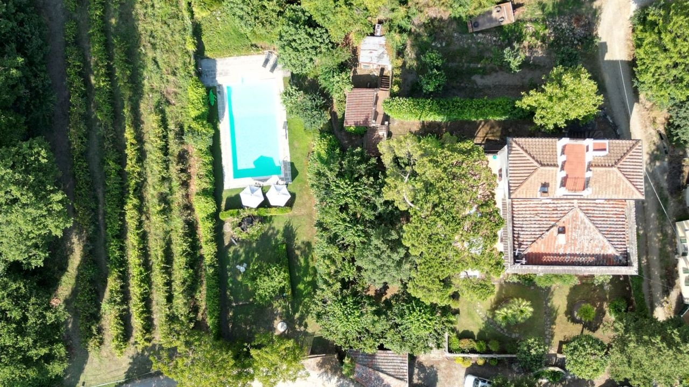

€720.000
Arezzo countryside (~6 km from Piazza Grande) · Tuscany · Italy
Habitable early-20th-c Art Nouveau / Liberty villa near Arezzo with panoramic turret, original beams, marble/terracotta floors, Art Nouveau windows, fireplace and a verified built private 14×6 pool renovated 2022 on a fenced ~2.250 m² park with annexes - old mixed with careful renovation, not sleek-only and not a project.
Opened 1 Oct 2026 on Nest Seekers (5290791); asking €720.000; 5 beds / 4 baths; villa ~380 m² plus ~54 m² service outbuildings (barbecue kitchenette, woodshed, former bread oven, 32 m² garage); park 2.250 m²; independent upper-floor flat with terraces; artesian well + aqueduct; auto irrigation; WiFi. Immobiliare Italiano listings page also cards a matching Arezzo Art Nouveau villa-with-pool at €720k (stats marketed as ~544 m² / 7 beds / 12×6; land ~2.242 m²) - likely same property under parallel marketing; II detail slug not resolved today. Not a bargain flag (no clear drop), though well under cap for the typology.
View listing